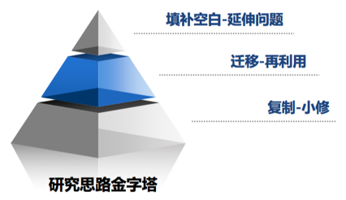

教程
搬运自Tao哥，感谢Tao哥二次整理
致谢
此内容为 Yiming Li 老师的科研经验分享，能帮助刚开始进行人工智能方向科研的同学迅速了解领域内的基础知识、掌握基本的科研方法，故而摘录至此，供大家一起学习！
深度学习的理论基础
- 李宏毅机器学习课程: 2/18，2/25，3/04，3/25，4/22，4/29这几天的课程。建议完成布置的作业并听助教的HW讲解，在5天之内完成这个课程。
- 吴恩达深度学习课程: 和上面的课程有一些重复，可以用来速刷查漏补缺，建议在2天之内完成这个课程。
- 深度学习面试宝典: 数学、机器学习、深度学习、计算机视觉、传统图像处理，建议2天内完成理解和记忆。
- 斯坦福视觉课CS231n：速刷，查漏补缺，建议在3天之内完成这个课程。
- 李宏毅LLM & Diffusion Model课程：推荐快速过完Youtube上LLM和Diffusion相关的课程，不懂的建议结合代码和知乎解读等学习。
深度学习的代码基础
- Python基础：Python基础教程、numpy基础
- Jupyter Notebook: Jupyter Notebook英文教程、中文教程 (需要学会如何在远程服务器上搭建Notebook)
- Pytorch: 官方教程 (可以自行寻找中文版学习)、小土堆教程
- Anaconda: 知乎教程（重点掌握如何下载、安装、创建环境、激活环境、安装需要的库、删除环境）
- Linux：bilibili教程 (重点掌握基本的命令和如何使用screen等任务后台管理、FileZilla等文件传输工具)
- Git：bilibili教程（重点掌握如何进行版本控制）
科研基础
- 了解Google Scholar (如何进行高级搜索、订阅)、arXiv (如何进行搜索、订阅、Connected Papers)、Semantic Scholar的基本使用
- 不会的东西优先学会使用GPT、Google、Wiki、知乎、CSDN等资源查找相关的信息，实在不行再去问别人 《提问的智慧》
- 文献的阅读和记笔记方式：从abstract读到intro，再读到方法和实验。读的时候按照顺序思考并回答如下问题：
- 作者旨在做什么事（1句话）
- 这件事的难点在哪里（1-2句话）
- 宏观角度来说，作者是怎么解决的（1-2句话）
- 作者的方法技术细节
- 所提的方法为什么有效
- 作者做了哪些重要实验来支持他的观点
- 作者的主要贡献是什么
- 这个工作还有什么（潜在的）缺陷和可以改进的地方
- 文献的记录和管理方式：文献记录和管理模板 、学习到的搭配和表达
- Latex: bilibili教程、tablesgenerator、注册并了解overleaf的基本使用
- 基本的PPT制作: Beamer知乎介绍、Beamer Overleaf模板、PPT模板及示例.pptx
- 中文一律宋体，英文一律Times New Roman字体
- 确保易读性：字体不能过小、每页字不能太多、图表下方要配有简单的结果解释、整体需要图文并茂
- 一般不允许使用具有图片堆叠的动画，保证导出PDF时PPT依旧正常
- 图片、表格需要有标题。涉及到参考文献的需要设置引用；参考文献放在本页PPT的最下方；
- 如何高效的撰写（双）周报：周报模板
- 所有周报在一个文档内，把最新一期的内容放在文档最上方（整体而言，周报文档是按照时间顺序倒序的）
- 请把周报命名为’周报-name’ (e.g., ‘周报-xxx’)
- 请注意内容的可读性（排版、语言等）
- 需要包括足够的细节，例如重要实验的结果等
- 如果有针对具体研究课题的讨论，请在讨论结束后半天内把讨论的内容总结到周报中，并把链接发我核对。具体需要总结的内容有：本次讨论的细节以及讨论后定下来的未来工作安排
- 每周六晚上10点提交，时间跨度为上周六到本周六 (建议提前定好闹钟，不然很容易忘)
- 请把周报的权限改为‘互联网上获得链接的人可阅读’，并通过微信将周报的链接私发给我
- 请保持周报包含足够多信息的同时做到尽量简洁，周报同时是我对大家课题的一个备忘录。基于这个考量，一些与科研课题无关的信息请不要详细展开，例如，论文的阅读笔记啥的可以放在别的doc里，只需要说你读了论文，笔记丢个链接在这就行（当然，放不放笔记链接完全是你的自由）
- 如何进行高效的汇报和会议
- 汇报、会议、论文的本质都是向其他人快速传递信息，因此整体而言是一个总分结构 (具体的参考模板见下)
- 汇报论文的时候：今天讲哪几篇—>为什么要讲这几篇—>[论文研究的问题—>论文的motivations (及难点)—>概括的说这篇论文是怎么解决这个问题的—>论文的核心贡献—>方法的具体细节—>方法为什么有效—>能支撑论文观点的实验+你觉得有必要讲、学习的相关实验]—>这篇工作有什么潜在缺陷—>从中学习到了什么，下一步有什么打算（e.g., 改进它）
- 汇报实验的时候：做了什么实验—>为什么要做这些实验（+我们期待看到什么样的结果）—>实验有哪些结果—>这些结果说明了什么—>目前遇到了什么障碍/困难/需要讨论的独特现象—>下一步的计划
- 高效会议
- 会前至少一天按照上述要求做好PPT，并将其发到群里
- 会议前提前准备，自己先过一遍PPT，不要到时候讲的磕磕绊绊
- 与会议当前主题无关的事情放到整体会议结束后再讲
- 每个人的论文和实验汇报都尽量控制在30分钟以内，做到富有信息量且简洁
- 如何进行文献调研
- 目标
- 找到需要调研方向的全部相关文献（包括已正式发表、arXiv、ICLR Submission等）
- 找到目前的state-of-the-art方法
- 最好能把现有的方法按照性能从高到低进行排序（按照你总结和了解的）
- 要注意，有的方法效果可能并不稳定，它们在自己文章中报告的可能只是特定参数下调出来的最佳值。因此，你需要多参考几篇论文的实验来更加全面的了解各个方法（e.g., 论文中的baselines）的实际效果和稳定性，而不是简单的就看一下最新的论文中的实验结果。当然了，越新的顶会/顶刊/顶组的工作的参考价值越大
- 技术路线和演化方式
- 总结和提炼每篇论文的核心方法设计
- 讲清楚各篇论文的演化过程。具体来说，你需要回答：现有的方法按照技术路线可以被划分为哪几类，每类里面有哪些论文，各类中的论文是怎么发展的。简单的来说这部分的分析类似于你在写论文中的related work章节
- 优缺点: 每篇论文有什么优点和缺点。具体的，一般优点论文里面都写得很清楚，缺点需要参考别的论文的说法和自己去深入思考
- 实验设计：用了什么数据集、什么评价指标、做的什么模型架构、做了哪些类型的实验等
- 步骤
- 选定准确且全面的关键词（列表）。你可能在读论文的过程中发现更多相关的关键词，逐步加进你的检索列表即可
- 使用谷歌学术基于你的关键词进行检索。你可能会需要用到高级检索功能，如果你有多个关键词需要检索
- 从最高被引的论文、最新的顶会顶刊论文开始阅读。特别的，如果有合适的综述性论文可以最先从它开始。
- 先快速浏览谷歌学术中使用关键词列出的所有文献的标题和摘要，筛选出和需要调研主题相关的论文
- 在详细阅读全文之前，先阅读论文的引言和结论部分，以判断该论文是否适合深入研究。在阅读引言的过程中，你也许能找到该论文对已有工作的优缺点分析、本文方法的优点
- 阅读相关工作部分，根据它们的引用去寻找（这篇论文发表之前）待调研领域的相关工作。此时你也许能找到该论文对已有工作的优缺点分析、现有工作的技术路线和演化等
- 阅读论文的方法部分，尤其是pipeline图及其caption对应的部分，总结本文的主要技术、分析该方法的潜在缺点
- 阅读论文的实验部分，分析它们的实验设计和现有工作的性能
- 参考模板：论文调研参考模板
- 目标
- 如何进行高效的时间和任务管理
- 提前维护一个长期的（建议一个学期）to-do list，把重要的任务及其时间节点都列在上面
- 针对每个重要任务基于子任务进行拆分，根据DDL来定一个每个子任务的时间，形成一个整体的schedule。记得打好提前量，不要时间正好卡DDL，不然万一中途有什么事这个任务就逾期了
- 建议维护一个短期的（一个月）的时间表，按照每小时/每半小时进行拆分，规划好一周内每天的时间。记得给自己留出足够的休息时间。
- 学会使用备忘录，推荐’高效Todo’APP
- 可以使用一些辅助工具来监督学习，例如Qbserve、番茄钟等
- 飞书的基本使用：重点学习云文档、任务、会议、飞书汇报
- 什么是好的研究？
- 定义、解决了一个新（且重要）的问题
- 推动、改变了一个潮流或认识（i.e., inspiring、unexpected、fancy的研究）
- 简单而不平凡 (大道至简): simple yet effective methods with deep insights or even theoretical supports.
